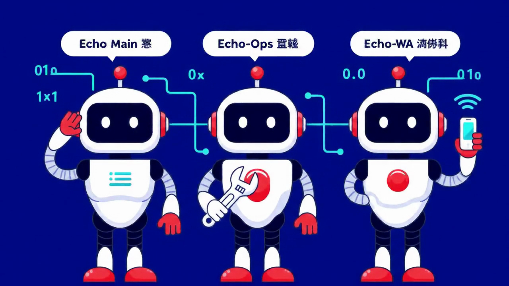
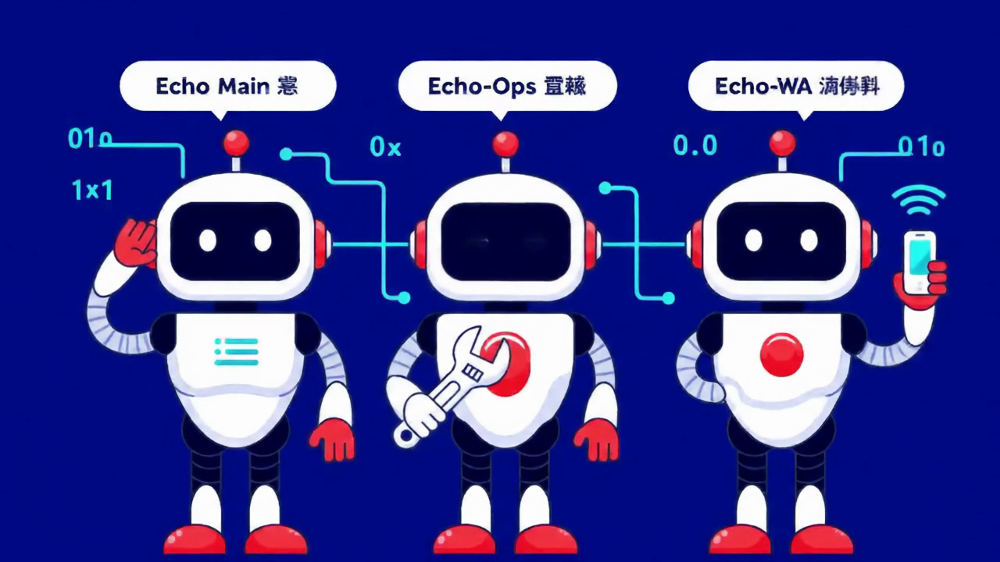
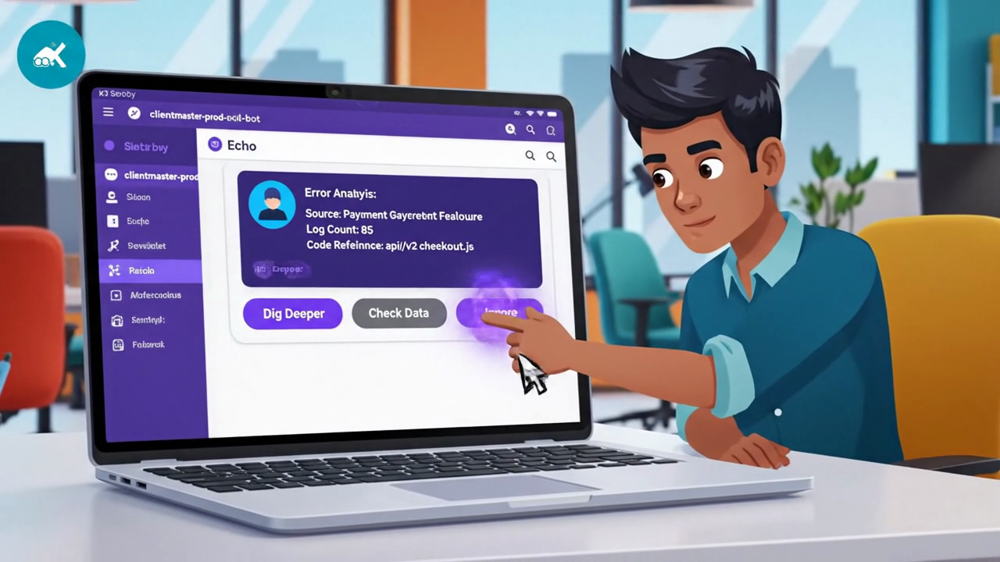
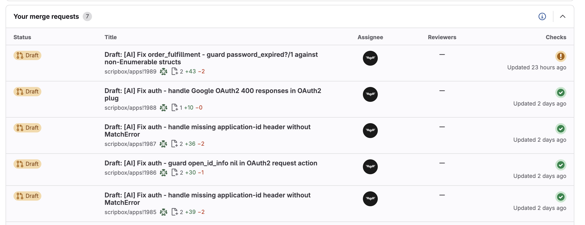
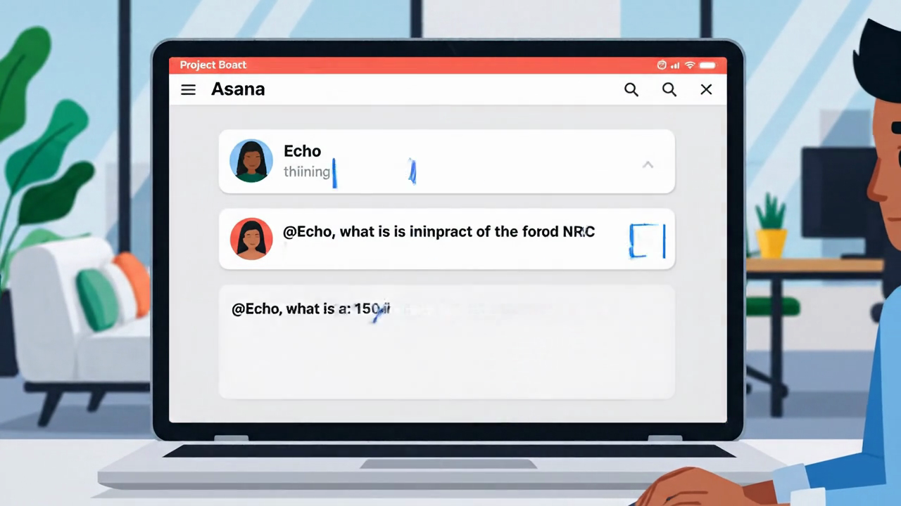
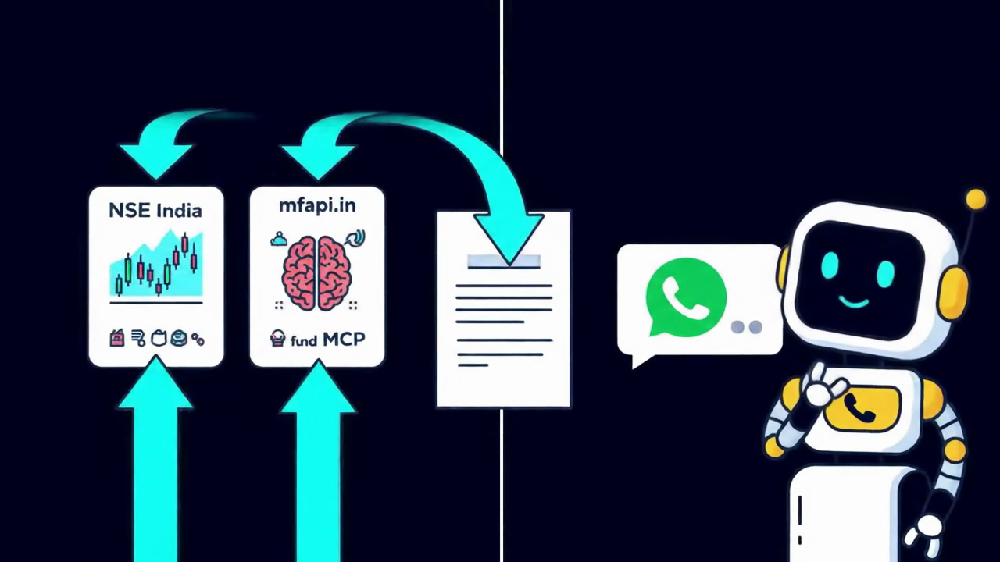

🫡


Echo
Your AI Ops Team That Never Sleeps
Scripbox's multi-agent AI operations platform — built on Claude, powered by OpenClaw

▶ Watch the 2-minute demo
Your AI Ops Team That Never Sleeps
Scripbox's multi-agent AI operations platform — built on Claude, powered by OpenClaw

▶ Watch the 2-minute demo
The Problem
Scripbox engineering deals with production errors across 7 microservices. Every. Single. Day. Each error needs manual triage — Sentry for traces, Graylog for logs, GitLab for code, Asana for context. That's 15-30 minutes per error, and they pile up fast.
The Solution
Echo is a multi-agent AI system that handles production operations autonomously. It runs 24/7 on a Mac Mini under someone's desk. No cloud. No fuss. Just works.

Answers @Echo mentions in Asana and Slack. Thinks first, then gives you the real answer.
Monitors 7 Sentry channels every 15 min. Analyzes errors across Sentry + Graylog + GitLab. Never sleeps.
Sends weekly WhatsApp newsletters with live Nifty, Sensex, and MF NAV data. Monday mornings, handled.
Features
When a production error hits, Echo doesn't just notify you — it investigates. It pulls the Sentry stack trace, searches Graylog for correlated logs, checks GitLab for who changed what, and drops the analysis right in your Slack thread. Then it asks: what do you want to do?

Extended Graylog trace (±5min), GitLab blame, related MRs
Metabase queries to verify affected records and integrity
Marks as triaged, saves decision to knowledge base for next time

What you're seeing: Echo detected a NEXUS process termination. The thread shows: error description, stack trace, Graylog logs (HTTP requests + KeyError), GitLab code context (commit
ab539882, MR !1977), severity, and Resolve/Ignore buttons. All automated. Zero humans involved.

When Echo identifies a fixable error, it doesn't just report it — it creates a GitLab merge request with regression tests, pushes the fix, and verifies the pipeline passes. All prefixed with [AI] so you know who wrote it.

What you're seeing: Five draft MRs created by Echo across
order_fulfillmentandauthservices. Each MR includes the fix + regression test, with pipelines passing (green checks). All created autonomously from Sentry error analysis — test-first, fix second.
Every bug ticket that lands in Asana gets the Echo treatment — classified, analyzed, and tagged before you even open it. Data issue or code bug? Echo figures it out.

Echo was asked to look into a CRM mirror view issue. It queried databases, found the root cause, and then went above and beyond.

Echo found that
auth_idin clientmaster was NULL — the CRM can't resolve the auth session. But it didn't stop there...

Echo discovered 897 users had the same issue. It autonomously created a backfill ticket with the full problem description and fix instructions. That's not a chatbot. That's a teammate. — Echo 🫡

Just tag @Echo on any Asana ticket or @openclaw in Slack. Ask a question. Echo thinks, investigates across services, and replies with a structured answer. It's like having a senior engineer on call 24/7 who never gets annoyed.

@Echo <question>@openclaw in any channelEvery Monday morning, Echo-WA fetches live market data, formats a beautiful newsletter, and sends it to the team WhatsApp group. Nifty 50, Sensex, fund NAVs, investment insights — all automated. The kind of thing that used to take 30 minutes now takes zero.


Actual newsletter sent by Echo to WhatsApp — live data, formatted, delivered.
Architecture
No Kubernetes. No cloud. No $10K/month AWS bill. Echo runs entirely on a Mac Mini M4 Pro sitting under a desk. Three agents, seven channels, twenty-four-seven.
+-------------------+
| OpenClaw GW |
| (Mac Mini M4) |
+---------+---------+
|
+--------------+--------------+
| | |
+-----+-----+ +-----+-----+ +-----+-----+
| Echo Main | | Echo-Ops | | Echo-WA |
| convos | | bug hunt | | newsletter|
+-----+-----+ +-----+-----+ +-----+-----+
| | |
Slack DMs Sentry x7 WA Group
Asana @Echo Asana Triage Weekly Send
| Component | Details |
|---|---|
| Host | Mac Mini M4 Pro — 12 cores, 24GB RAM |
| AI | Claude Sonnet 4 (Anthropic API) |
| Gateway | OpenClaw v2026.3.24 |
| Sandbox | Podman containers |
| Memory | Custom MCP Server (Elixir + PostgreSQL) |
| Channels | Slack + WhatsApp + Asana |
How It Works
When a production error fires, here's what happens — automatically, in seconds, with zero human involvement:
Each step queries a different production system in real time. Echo cross-correlates the evidence — matching timestamps, tracing request IDs, identifying the exact commit that broke things — and drops a structured analysis in your Slack thread with interactive buttons to take action.
Security
Echo doesn't run wild. Every agent has strict role-based access control with zero crosstalk between channels. The ops bot can't accidentally post in your DMs. The newsletter bot can't touch Sentry channels. Lock it down, sleep well.
#sentry-channels → echo-ops only
#pranav-direct → main agent only
WhatsApp group → echo-wa only
Bot messages → allowBots: true (Sentry)
Human messages → allowBots: false (DMs)
Group policy → open (Slack) / allowlist (WA)
Non-main agents run in Podman containers — isolated filesystem, dropped capabilities, bridge networking. They can't touch the host.
Each agent gets only the tokens it needs. Env vars ending in _TOKEN, _SECRET, _API_KEY are blocked by default — must use renamed vars.
| Agent | Has Access To | Blocked From |
|---|---|---|
| Echo Main | Slack DMs, Asana @Echo, WA newsletter | Sentry channels, bug triage |
| Echo-Ops | 7 Sentry channels, Asana triage, KB | DMs, WhatsApp, newsletter |
| Echo-WA | WhatsApp Echo group (allowlist) | Slack, Sentry, Asana |
Monitoring
Echo-Ops watches these production Sentry channels around the clock. Every 15 minutes, it polls for new errors, analyzes them, and posts to the relevant Slack thread. Nothing slips through.
Automation
Echo runs on a heartbeat. These scheduled jobs keep everything moving — polling Sentry, triaging Asana, processing @mentions, cleaning up the knowledge base, and sending newsletters. All automated. All reliable.
Skills
Echo's capabilities are defined as Skills — modular, versioned instruction sets that tell each agent exactly how to handle complex multi-step operations. These aren't prompts. They're battle-tested playbooks.
Each skill is a multi-phase playbook. For example, sentry-review has three phases:
Sentry trace + Graylog logs + GitLab blame = structured error report posted to Slack
Block Kit buttons (Dig Deeper / Check Data / Ignore) — polls for human click, handles choice
Creates a GitLab branch, writes regression test first, pushes fix MR, verifies pipeline passes
Every decision saved to Memory MCP — next time the same error hits, Echo already knows the answer
Shared Brain
Echo uses a custom Memory MCP Server — a PostgreSQL-backed shared memory layer that gives all three agents persistent, searchable knowledge. What Echo-Ops learns today, Echo Main remembers tomorrow.
| Key Pattern | Used By | Purpose |
|---|---|---|
newsletter.theme.current | Echo-WA | This week's investment theme |
newsletter.product_update.current | Echo-WA | Optional product update |
newsletter.sent.{YYYY-Wnn} | Echo-WA | Dedup check — never double-sends |
sentry.kb.* | Echo-Ops | Known error patterns & resolutions |
session.* | All | Session state & agent context |
The Memory MCP server is an Elixir application with trigram search, tag filtering, and full JSON-RPC 2.0 MCP protocol support. Built in this very repo. It's MCPs all the way down.
Results
| Metric | Before | After |
|---|---|---|
| Error triage | 15-30 min per error | Automated |
| Bug classification | Manual, inconsistent | Auto-tagged |
| Cross-service detection | Often missed | Automatic |
| Newsletter | 30 min/week | Zero effort |
| Morning routine | Firefighting | Coffee + review |
Tech Stack
| What | How |
|---|---|
| AI Model | Claude Sonnet 4 (Anthropic) |
| Agent Platform | OpenClaw (self-hosted) |
| Host | Mac Mini M4 Pro |
| Memory | Custom MCP Server (Elixir + PostgreSQL) |
| Messaging | Slack (Socket Mode) + WhatsApp |
| Error Tracking | Sentry (self-hosted) |
| Logs | Graylog |
| Code | GitLab |
| PM | Asana |
| Data | Metabase |
| Sandbox | Podman containers |
Your AI ops team that never sleeps.
Built on Claude · Powered by OpenClaw · Scripbox Hackathon 2026